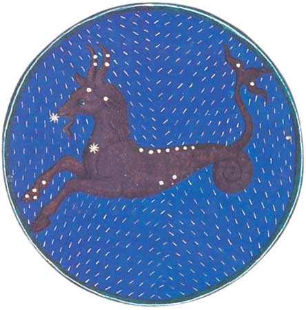

|

|
Capricornus, (Latin: “Goat-horned”),
also called Capricorn and the Goat,
in astronomy, zodiacal constellation
lying in the southern sky between
Aquarius and Sagittarius, at about 21
hours right ascension and 20° south
declination. Its stars are faint; Deneb
Algedi (Arabic for “kid’s tail”) is the
brightest star, with a magnitude of 2.9.
In astrology, Capricornus (also called
Capricorn) is the 10th sign of the zodiac,
considered as governing the period from
about December 22 to about January 19.
One explanation of the fishtail with which
the goat is often represented is found in
the Greek myth of Pan, who, to avoid the
monster Typhon, jumped into the water just
as he was changing into animal shape. The
half above water assumed the shape of a
goat while the lower half, the tail, assumed
the shape of a fish.
|